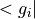

Sphinx cheatsheet¶
A collection of some Sphinx features used in the AiiDA documentation.
Terminal and Code Formatting¶
Something to be run in the command line can be formatted like this:
Some command
Code formatting, but now with python syntax highlighting:
import module
print('hello world')
Another way of explicitly doing this is:
import module
print('Hello, world!')
Here is an external link to the Sphinx doc on this.
Note also the keyword highlight (Sphinx documentation here), which may also be used to achieve a similar result.
Notes¶
Note
Notes can be added like this.
Note
A multi-line note can be added like this. Hello, world!
Links, Code Display, Cross References¶
Code Display¶
Can be done like this.
This entire document can be seen unformatted at This Page using the keyword literalinclude.
For more details, see the Sphinx documentation.
def add(x, y):
return x + y
def multiply(x, y):
return x * y
result = multiply(add(1, 2), 3)
Math¶
Math formulas can be added as follows , see the Sphinx documentation on math.
Cross Reference Docs¶
Here is an example of a reference to Graph concept which is on another page.
Here, Math, is an example of a reference to something on the same page.
Note
References within the same document need a reference label, see .. _self-reference: used in this section for an example.
Cross Reference Classes and Methods¶
Reference to the aiida.orm.nodes.data.structure.StructureData class, showing the full path.
Reference to the StructureData class (with preceding tilde), showing only the class name.
Note
Always point to the actual definition of a class, e.g. aiida.orm.nodes.data.structure.StructureData, not an alias like aiida.orm.StructureData (or Sphinx will complain).
Reference to the append_atom() method.
Reference to the label attribute/property.
Table of Contents for Code¶
Table of contents that cross reference code, can be done very similarly to how it is done for documents. For example the parser docs can be indexed like this:
Automodules Example¶
Define warnings that can be thrown by AiiDA.
-
exception
aiida.common.warnings.AiidaDeprecationWarning[source] Class for AiiDA deprecations.
It does not inherit, on purpose, from DeprecationWarning as this would be filtered out by default. Enabled by default, you can disable it by running in the shell:
verdi config warnings.showdeprecations False
-
exception
aiida.common.warnings.AiidaEntryPointWarning[source] Class for warnings concerning AiiDA entry points.
-
exception
aiida.common.warnings.AiidaTestWarning[source] Class for warnings concerning the AiiDA testing infrastructure.
Note
A :noindex: directive was added to avoid duplicate object description for this example.
How To Format Docstrings¶
Much of the work will be done automatically by Sphinx, just format the docstrings with the same syntax used here, a few extra examples of use would include:
def some_function(parameter_name, other_parameter):
"""Some function
Description of the purpose of this function
:param parameter_name: some notes on input parameter 'parameter_name'
:type parameter_name: str
:param other_parameter: some notes on input parameter 'other_parameter'
:type other_parameter: str,list
:return returned_parameter: some note on what is returned
:rtype: str
:raise TypeError: notes on when and why TypeError is raised
:raise `~aiida.common.exceptions.IntegrationError`: Notes on when and why IntegrationError is raised
"""
# function code here
In the docstring of a class, you can refer to a method of the same class using :meth:`.name_of_method`.
This Page¶
Sphinx cheatsheet
#################
A collection of some Sphinx features used in the AiiDA documentation.
Terminal and Code Formatting
============================
Something to be run in the command line can be formatted like this::
Some command
Code formatting, but now with python syntax highlighting::
import module
print('hello world')
Another way of explicitly doing this is:
.. code-block:: python
import module
print('Hello, world!')
`Here <https://www.sphinx-doc.org/en/latest/usage/restructuredtext/directives.html#directive-code-block>`_ is an external link to the Sphinx doc on this.
Note also the keyword ``highlight`` (`Sphinx documentation here <https://www.sphinx-doc.org/en/latest/usage/restructuredtext/directives.html#directive-highlight>`_), which may also be used to achieve a similar result.
Notes
=====
.. note:: Notes can be added like this.
.. note::
A multi-line note can be added like this.
Hello, world!
Links, Code Display, Cross References
-------------------------------------
Code Download
=============
Code can be downloaded like this.
Download: :download:`this example script <../../concepts/include/snippets/calculations/calcfunctions/add_multiply_plain_python.py>`
Code Display
============
Can be done like this.
This entire document can be seen unformatted at :ref:`this-page` using the keyword ``literalinclude``.
For more details, see the `Sphinx documentation <https://www.sphinx-doc.org/en/latest/usage/restructuredtext/directives.html#directive-literalinclude>`_.
.. literalinclude:: ../../concepts/include/snippets/calculations/calcfunctions/add_multiply_plain_python.py
.. _self-reference:
Math
====
Math formulas can be added as follows :math:`<g_i|`, see `the Sphinx documentation on math <http://www.sphinx-doc.org/latest/ext/math.html#module-sphinx.ext.mathbase>`_.
Cross Reference Docs
====================
Here is an example of a reference to :ref:`concepts_provenance` which is on *another page*.
Here, :ref:`self-reference`, is an example of a reference to something on the same page.
.. note:: References within the same document need a reference label, see `.. _self-reference:` used in this section for an example.
Cross Reference Classes and Methods
===================================
Reference to the :py:class:`aiida.orm.nodes.data.structure.StructureData` class, showing the full path.
Reference to the :py:class:`~aiida.orm.nodes.data.structure.StructureData` class (with preceding tilde), showing only the class name.
.. note:: Always point to the actual definition of a class, e.g. ``aiida.orm.nodes.data.structure.StructureData``, **not** an alias like ``aiida.orm.StructureData`` (or Sphinx will complain).
Reference to the :py:meth:`~aiida.orm.nodes.data.structure.StructureData.append_atom` method.
Reference to the :py:attr:`~aiida.orm.nodes.Node.label` attribute/property.
Table of Contents for Code
==========================
Table of contents that cross reference code, can be done very similarly to how it is done for documents.
For example the parser docs can be indexed like this:
.. toctree::
:maxdepth: 1
aiida.orm <../../apidoc/aiida.orm>
Automodules Example
====================
.. toctree::
:maxdepth: 2
.. automodule:: aiida.common.warnings
:members:
:noindex:
.. note:: A ``:noindex:`` directive was added to avoid duplicate object description for this example.
How To Format Docstrings
------------------------
Much of the work will be done automatically by Sphinx, just format the docstrings with the same syntax used here, a few extra examples of use would include:
.. code-block:: python
def some_function(parameter_name, other_parameter):
"""Some function
Description of the purpose of this function
:param parameter_name: some notes on input parameter 'parameter_name'
:type parameter_name: str
:param other_parameter: some notes on input parameter 'other_parameter'
:type other_parameter: str,list
:return returned_parameter: some note on what is returned
:rtype: str
:raise TypeError: notes on when and why TypeError is raised
:raise `~aiida.common.exceptions.IntegrationError`: Notes on when and why IntegrationError is raised
"""
# function code here
In the docstring of a class, you can `refer to a method of the same class <http://www.sphinx-doc.org/en/stable/domains.html>`_ using ``:meth:`.name_of_method```.
.. _this-page:
This Page
=========
.. literalinclude:: sphinx_cheatsheet.rst